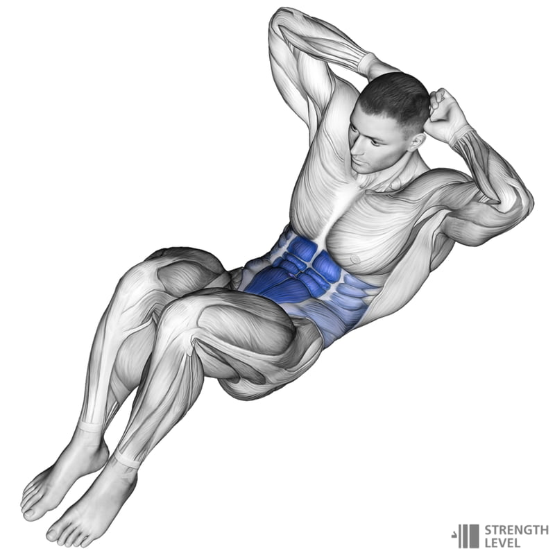
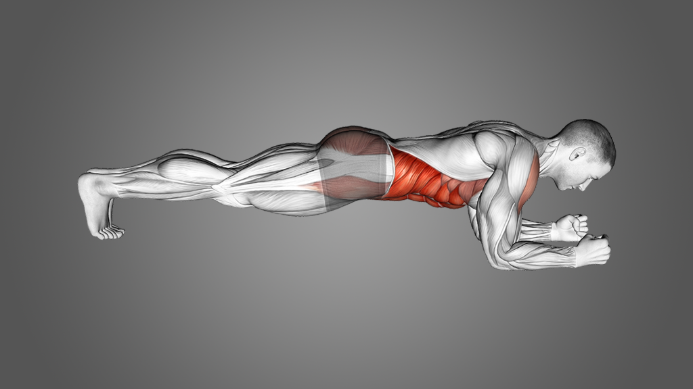
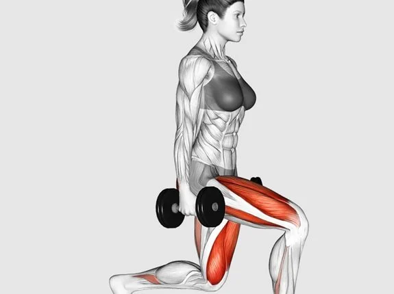
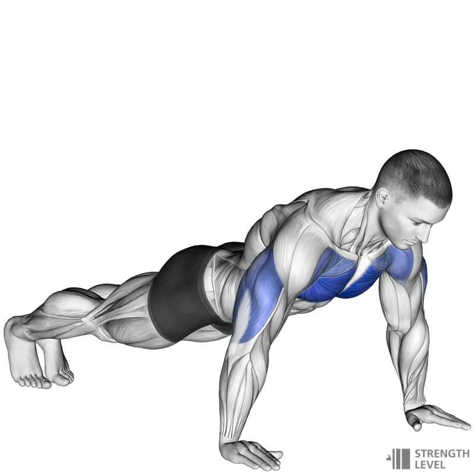

Regularne ćwiczenia pomagają wzmocnić konkretne partie mięśniowe, poprawić sylwetkę i zdrowie ogólne. Poniżej znajdziesz przykładowe ćwiczenia na poszczególne części ciała oraz ich korzyści.
Brzuch
| Zdjęcie |
Ćwiczenie |
Korzyści |
|  |
Brzuszki |
Wzmacniają mięśnie prosty brzucha |
|  |
Deska (plank) |
Stabilizuje korpus, poprawia postawę |
Nogi
| Zdjęcie |
Ćwiczenie |
Korzyści |
 |
Przysiady |
Wzmacniają uda i pośladki |
|  |
Wykroki |
Poprawiają równowagę i kształtują dolne partie ciała |
Plecy i ramiona
| Zdjęcie |
Ćwiczenie |
Korzyści |
|  |
Pompki |
Wzmacniają klatkę piersiową i ramiona |
 |
Podciąganie |
Rozwija mięśnie pleców i ramion |